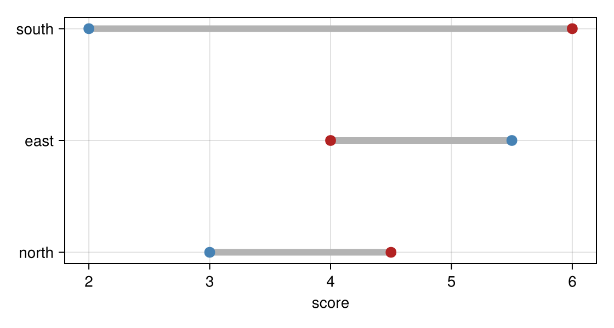

Your own plot types
A plot type you define with Makie's @recipe responds without any work on your part: masque(fig) makes each scatter!, lines!, or other plot your recipe draws respond as it would on its own (see Supported plots and axes). To make your plot type respond as one thing, with its own layer id and a payload that means something for your data, define one method of interactables for it.
A dumbbell chart
A dumbbell chart draws one bar per row from a value before to a value after, with a dot at each end. This recipe draws the bars with linesegments! and the dots with two scatter! calls:
begin
@recipe Dumbbell (before, after) begin
color = :gray70
linewidth = 6
beforecolor = :steelblue
aftercolor = :firebrick
markersize = 14
end
function Makie.plot!(p::Dumbbell)
map!(p.attributes, [:before, :after], [:bars, :starts, :ends]) do before, after
starts = [Point2f(x, k) for (k, x) in enumerate(before)]
ends = [Point2f(x, k) for (k, x) in enumerate(after)]
bars = [q for k in eachindex(starts) for q in (starts[k], ends[k])]
return (bars, starts, ends)
end
linesegments!(p, p.bars; color = p.color, linewidth = p.linewidth)
scatter!(p, p.starts; color = p.beforecolor, markersize = p.markersize)
scatter!(p, p.ends; color = p.aftercolor, markersize = p.markersize)
return p
end
endWithout a method of its own, each bar and each dot is a separate mark, and a click reports which bar or dot it was rather than the row's values. To make each row one mark that reports its values, add this method:
function Masque.interactables(ax, p::Dumbbell; payloads = nothing, kwargs...)
before, after = p.before[], p.after[]
rows = [
(; row = k, before = before[k], after = after[k], change = after[k] - before[k])
for k in eachindex(before)
]
bars = p.plots[1]
return interactables(ax, bars; payloads = something(payloads, rows), kwargs...)
endNow hovering a row anywhere along its bar shows its values. With bind = d, where d is what dumbbell! returned, a click sets pick to that row, so pick.change is how much the row changed:
Notebook as text
Hover over a row to see its values, then click it. The last cell shows how much the row changed.
The recipe draws each row as a bar from before to after, with a dot at each end.
begin
@recipe Dumbbell (before, after) begin
color = :gray70
linewidth = 6
beforecolor = :steelblue
aftercolor = :firebrick
markersize = 14
end
function Makie.plot!(p::Dumbbell)
map!(p.attributes, [:before, :after], [:bars, :starts, :ends]) do before, after
starts = [Point2f(x, k) for (k, x) in enumerate(before)]
ends = [Point2f(x, k) for (k, x) in enumerate(after)]
bars = [q for k in eachindex(starts) for q in (starts[k], ends[k])]
return (bars, starts, ends)
end
linesegments!(p, p.bars; color = p.color, linewidth = p.linewidth)
scatter!(p, p.starts; color = p.beforecolor, markersize = p.markersize)
scatter!(p, p.ends; color = p.aftercolor, markersize = p.markersize)
return p
end
endThis method makes each row one mark. It passes the recipe's bars, p.plots[1], so a row responds along its whole drawn width, and gives each row a payload with its values.
function Masque.interactables(ax, p::Dumbbell; payloads = nothing, kwargs...)
before, after = p.before[], p.after[]
rows = [
(; row = k, before = before[k], after = after[k], change = after[k] - before[k])
for k in eachindex(before)
]
bars = p.plots[1]
return interactables(ax, bars; payloads = something(payloads, rows), kwargs...)
endbegin
fig = Figure(size = (560, 300))
ax = Axis(fig[1, 1]; xlabel = "score", yticks = (1:3, ["north", "east", "south"]))
d = dumbbell!(ax, [3.0, 5.5, 2.0], [4.5, 4.0, 6.0])
nothing
endmasque(fig) uses the method for the dumbbell! plot, bind = d makes pick the clicked row itself, and @bind pick saves a click in pick.
@bind pick masque(fig; bind = d)
pick starts as nothing. After a click, pick.change is the clicked row's change.
if isnothing(pick)
"click a row"
else
"row $(pick.row) changed by $(pick.change)"
endclick a rowIn a notebook, put the recipe and the method in their own cells, so rebuilding the figure does not define them again.
Writing the method
masque(fig) calls your method once for each plot of your type, with the axis the plot is drawn in and the plot itself. The method returns a vector of interactables, built with the same constructors you would use in a masque call; see Constructors.
masque names the layer after your plot function, so the first dumbbell! is :dumbbell, the second is :dumbbell_2. These names are the fields of the @bind value, and pick.layer and selected= use them too.
Pass kwargs... on to the constructors. A caller who wants a different tooltip or payloads for one plot passes them with the plot:
d = dumbbell!(ax, before, after)
@bind pick masque(fig, interactables(d; tooltip = masque"change $(change)"); bind = d)Those keywords reach your method, so without kwargs... in its signature this call fails with an error that names your plot type. The method above also takes payloads by name, so a caller's payloads replace the rows it builds.
Hit size from the drawn plot
The method above passes the recipe's own linesegments! plot, p.plots[1], to interactables, so the bar responds over its drawn width and follows the plot if you move it with translate!. p.plots lists the plots your plot! method draws, in the order it draws them.
You can also build layers from positions, for a shape your recipe does not draw as a plot of its own. Then you give the hit size yourself, as radius for points and tol for lines:
function Masque.interactables(ax, p::Dumbbell; kwargs...)
before, after = p.before[], p.after[]
pairs = [Point2f(x, k) for k in eachindex(before) for x in (before[k], after[k])]
return [SegmentInteractable(ax, pairs; mode = :pairs, tol = 6, kwargs...)]
endSeveral layers
To make parts of your plot respond separately, return a named tuple with a layer for each part. The names you give are the parts' names: the @bind value holds your plot as a named tuple of its parts, as in sel.dumbbell.ends, and a pick on a part says pick.layer == :dumbbell and pick.part == (:ends,).
Where two of your layers overlap, the pointer reaches the one that comes first, so put the part drawn on top first. This version makes each dot its own mark, ahead of the bar under it:
function Masque.interactables(ax, p::Dumbbell; kwargs...)
return (
starts = interactables(ax, p.plots[2]; kwargs...),
ends = interactables(ax, p.plots[3]; kwargs...),
bars = interactables(ax, p.plots[1]; kwargs...),
)
endselected= names a part the same way: selected = (dumbbell = (ends = [2],),) starts with the second end picked. A part can itself be a named tuple, for a recipe built from other recipes, and its parts nest one level deeper.
Your plot as a whole takes its place among the other plots on the axis the same way as any plot: where marks of two plots overlap, the plot drawn last gets the pointer (see interactables).
In a package
If your recipe lives in a package, put the method in a package extension, so that your users load Masque only if they use it. In your Project.toml:
[weakdeps]
Masque = "82b01fb5-7eeb-4559-83ea-8d75f85d4328"
[extensions]
MyPlotsMasqueExt = "Masque"and in ext/MyPlotsMasqueExt.jl:
module MyPlotsMasqueExt
using MyPlots, Masque
function Masque.interactables(ax, p::MyPlots.Dumbbell; payloads = nothing, kwargs...)
# as above
end
endTo make a click return a type of your own instead of an ElementEvent, see A custom interactable.